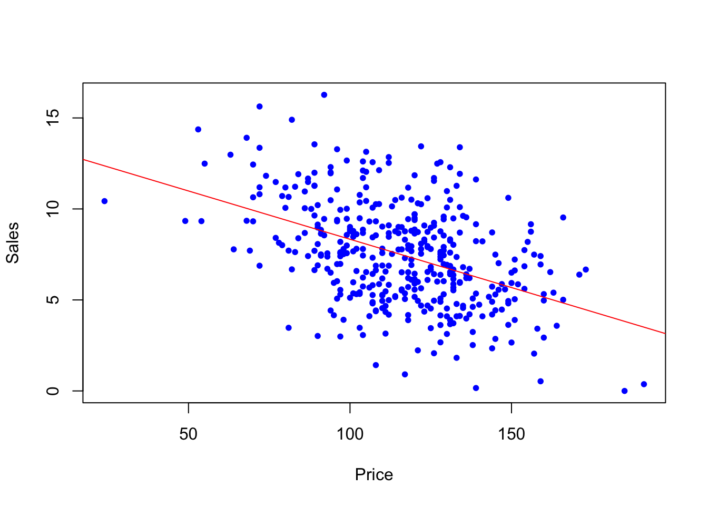

3 R Basic operations
This chapter introduces basic R operations including installing packages, operators, loading libraries and writing functions.
3.1 Create a project
Before diving into R programming, it is highly recommended creating a project. It will organize all related objects and files under one roof. Version control can be applied for automatically saving history (log) and data objects. Projects can facilitate additional specialized works such as:
- Writing a book using Quarto or bookdown
- Creating a website or a blog using Quarto
- Highly recommended to use this feature to create personal website
- Software development
- Data visualization using Shiny
- Manage data in database servers or other platform
However, to start R programming with a project helps better organize the process of data analytics. A program is not just running a procedure but performing more data science tasks that last more than just one time execution. It scales!
For more detail, consult Using RStudio Projects
3.2 Operators
3.2.1 Assignment operators
<- and = are both the assignment operator where as = must be used as top level.
|> is the base R “pipe” operator, feeding value (arguement) into a function.
[1] 15The other pipe operator %>% (package magrittr), which is more commonly used especially in tidyverse. Using %>%, the argument can be piped into the function without ().
[1] 153.2.2 Math operators
The common operators used in math are also applicable in the R environment.
- Arithmetic: +,-,*,/,^ (power)
- Logical: & (and), | (or), ! (Not)
- Relational: >,<, ==, >=, <=, !=
3.3 Package Management
3.3.1 Install packages
R comes with basic functions and demo datasets (e.g. mtcars, Titanic, iris). For additional functionalities or specialized functions, installing additional packages is needed. Use install.packages("ISLR2") for installation and it only needs be done the first time. However, for every new session, library() function is needed to call in (load) the package for remaining program.
3.3.2 Libraries
The library() function is used to load libraries, or groups of functions and data sets that are not included in the base R distribution. Basic functions that perform least squares linear regression and other simple analyses come standard with the base distribution, but more exotic functions require additional libraries. The \(ISLR\) book uses the MASS package, which is a very large collection of data sets and functions. The ISLR2 package also includes the data sets associated with this book for demonstration.
library(MASS)
library(ISLR2)
Attaching package: 'ISLR2'The following object is masked from 'package:MASS':
BostonIf you receive an error message when loading any of these libraries, it likely indicates that the corresponding library has not yet been installed on your system. Some libraries, such as MASS, come with R and do not need to be separately installed on your computer. However, other packages, such as ISLR2, must be downloaded the first time they are used. This can be done directly from within R. For example, on a Windows system, select the Install package option under the Packages tab. After you select any mirror site, a list of available packages will appear. Simply select the package you wish to install and R will automatically download the package. Alternatively, this can be done at the R command line via install.packages("ISLR2"). This installation only needs to be done the first time you use a package. However, the library() function must be called within each R session.
3.3.3 Speed and organization
The general principle of using packages is: only load what you need! There are over 20,000 packages but the memory is limited. This article gives some comparison on different methods of using and loading packages or libraries. Again, using Project to manage your resources and it is advised to restart the R session (Session –> Restart R) to start with a clean slate for each project.
3.3.4 Managing packages and Library
There are multiple ways of managing packages in each R session. Following the general principle of keeping a lean model, it is recommended to only load packages in library for each data program. Some useful hotkeys and functions:
Some useful hotkeys:
Restarting R: Ctrl+Shift+F10 (Mac: Command+Shift+0) = unload packages + clear objects (provided that in Tools/ Global options in Windows (Preference in Mac), Save workspace to .RData option is unchecked and set to never)
use gc() free up memory and report the memory usage.
rm(list=ls()) clear objects manually
gc() used (Mb) gc trigger (Mb) limit (Mb) max used (Mb)
Ncells 603436 32.3 1350921 72.2 NA 1350921 72.2
Vcells 1114950 8.6 8388608 64.0 16384 1839818 14.1- rows “Ncells” (cons cells): 28 bytes each on 32-bit systems and 56 bytes on 64-bit systems).
- columns Vcells: allocated space for vectors in multiples of 8 bytes
- used column reports how many cells have been allocated and the following column reports the total size in Megabytes.
- gc trigger column reports when the next garbage collection will occur.
- max used reports the maximum memory that was used since the last call to the gc() function.
3.4 Writing Functions
As we have seen, R comes with many useful functions, and still more functions are available by way of R libraries. However, we will often be interested in performing an operation for which no function is available. In this setting, we may want to write our own function. For instance, below we provide examples of simple functions. The first one reads in the ISLR2 and MASS libraries, called LoadLibraries(). Before we have created the function, R returns an error if we try to call it.
LoadLibrariesError in eval(expr, envir, enclos): object 'LoadLibraries' not foundLoadLibraries()Error in LoadLibraries(): could not find function "LoadLibraries"We now create the function. Note that the + symbols are printed by R and should not be typed in. The { symbol informs R that multiple commands are about to be input. Hitting Enter after typing { will cause R to print the + symbol. We can then input as many commands as we wish, hitting {Enter} after each one. Finally the } symbol informs R that no further commands will be entered.
LoadLibraries <- function() {
library(ISLR2)
library(MASS)
print("The libraries have been loaded.")
}Now if we type in LoadLibraries, R will tell us what is in the function.
LoadLibraries()[1] "The libraries have been loaded."If we call the function, the libraries are loaded in and the print statement is output.
The following example demonstrates creating a function out of existing functions from different packages:
###Writing R functions
## Combine the lm, plot and abline functions to create a one step regression fit plot function
regplot=function(x,y){
fit=lm(y~x)
plot(x,y)
abline(fit,col="red")
}
attach(Carseats)
regplot(Price,Sales)
## Allow extra room for additional arguments/specifications
regplot=function(x,y,...){
fit=lm(y~x)
plot(x,y,...)
abline(fit,col="red")
} # "..." is called ellipsis, which is designed to take any number of named or unnamed arguments.
regplot(Price,Sales,xlab="Price",ylab="Sales",col="blue",pch=20)
The following example creates a function to deal with package management:
# Create preload function
# Check if a package is installed.
# If yes, load the library
# If no, install package and load the library
preload<-function(x)
{
x <- as.character(x)
if (!require(x,character.only=TRUE))
{
install.packages(pkgs=x, repos="http://cran.r-project.org")
require(x,character.only=TRUE)
}
}Let’s try preloading the package name **tidyverse** (be sure to wrap the name with double quotes ““:
3.5 Workshop 1
Download and open packagemanagement.R from class GitHub under codes
Try each method one at a time
Which one is more convenient to you?
3.6 Workshop 2
Create the following objects:
x <-rnorm(30)
y = rnorm(x)
Plot:
histogram of y (hint: use the hist() function)
Both x and y, using pch=20 (choose your own color using col=““)
Check the environment
Clean all objects using the following command:
rm(list=ls())
Alternatively, you can use the hotkeys to restart R session
Try preload function to install and load packages
3.6.1 Recommended R Resources:
3.6.2 References:
Bryan, Jenny. STAT 545 (https://stat545.com) Bryan, Jenny and Jim Hester. What They Forgot to Teach You About R